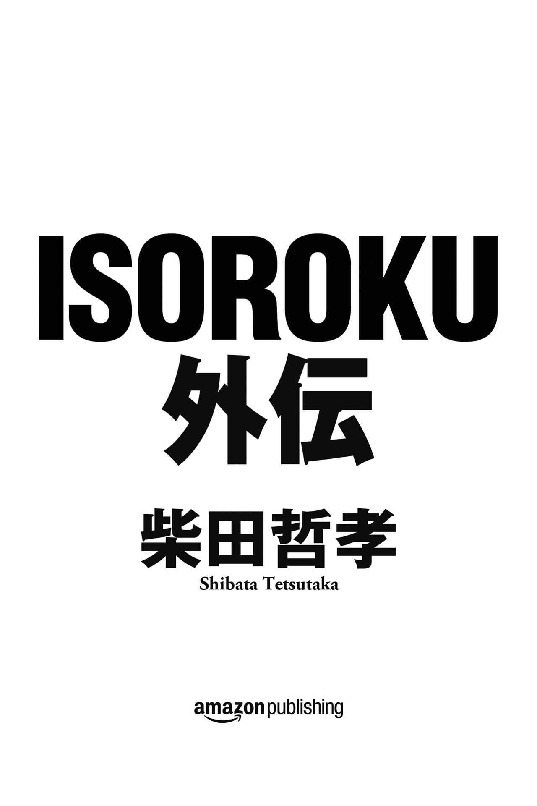

| ISOROKU外伝 (Kindle Single) | |
| 柴田 哲孝 | |
| Amazon Publishing (2018) | |

ＩＳＯＲＯＫＵ外伝
この物語には実在の（または実在した）人物・団体・場所等の名称が登場するが、この物語はあくまでフィクションである。
――作者
一八八四年四月四日――。
まだ春も浅い新潟県に住む旧長岡藩士族、高野貞吉の家に、六人目の男の子が生まれた。貞吉が五六歳の時の子供であったことから、この子は〝五十六〟と名付けられた。
高野五十六は、利発な少年だった。性格は寡黙ではあったが、幼くして英語を学び、他に算術、図画、作文、書道、運動に比類なき才能を発揮した。
また父貞吉の理解もあり、少年時代からキリスト教の教会に通ったことも、五十六の後の人生に大きな影響を与えることになる。アメリカ人宣教師ホレイショー・Ｂ・ニューエルの日曜学校によって五十六はアメリカについて学び、アメリカを知り、アメリカに憧れた。後に五十六が聖書とシェークスピアを愛読し、合衆国建国の父ベンジャミン・フランクリンを敬愛するようになるのも、すべて宣教師ニューエルの影響だった。
一九〇一年一二月、五十六は二〇〇人中二番という好成績で海軍兵学校に合格、入学した。以後、五十六は生涯を通じて日本帝国海軍の道を歩むことになる。
その五十六に人生最大の危機が訪れたのは海軍兵学校を卒業した半年後、まだ少尉候補生として兵役に就いたばかりの時だった。日露戦争の激戦が続く一九〇五年五月二七日、その決戦の舞台となった日本海海戦において五十六は巡洋艦〝日進〟に乗船。ロシアのバルチック艦隊と交戦中に敵砲弾の炸裂（公式記録）に巻き込まれ、左手の指二本欠損、左大腿部裂傷、左腕を骨折して切断も余儀なしとされるほどの重傷を負った。
一時は軍人として再起不能とも思われる重傷だったが、左腕も切断することなく助かり、五十六は奇跡的に怪我から回復する。以後、同年八月には海軍少尉に昇進。二年後には中尉、さらに二年後には大 尉 に昇進するなど、五十六は海軍内で着々と出世していった。
三一歳の若さで海軍少佐となった五十六に、翌一九一六年九月、旧長岡藩家老の山本家を継承するという話が持ち上がった。そもそもが高野家の六男であり、父貞吉をその三年前に亡くしていた五十六は、この話を受けた。
以後、高野五十六は〝山本五十六〟と名 告 り、日本帝国海軍の顔ヘとなっていくことになる。
◇
山本五十六の誕生から一四年後の一八九八年八月四日、日本の長崎県長崎市にあるバプティスト派教会のアメリカ人宣教師マッカラム夫妻に、一人の男の子が誕生した。
男の子は、アーサー・Ｈ・マッカラムと名付けられた。真夏の暑い日に生まれたこともあってか、活発で明るい少年だった。
アーサーの生まれた長崎市は、日本の古くからの港湾都市だった。まだ日本が鎖国していた江戸時代には国内唯一の貿易港〝出島〟があり、明治時代になっても外国からの人や文化の流入が多い町だった。だがマッカラム夫妻は宣教師としての布教活動も含め、日本人社会と積極的に交流。アーサーも、日本人の学校で学ばせた。そのためにアーサーは両親の母国語である英語よりも先に、日本語で読み書きができるようになっていた。
その後、アーサーは、両親のバプティスト派宣教師の仕事のために日本各地の都市を転々とする生活を送った。だが、中学生の時に父を亡くし、母と兄弟たちと共に故郷のアラバマ州に帰ることになった。
長崎をはじめとする日本の大きな町で育ったアーサーにとって、アラバマの片田舎での生活は退屈この上ないものだった。そこでアーサーは、アラバマから出るために一八歳の時にメリーランド州アナポリスの海軍兵学校に入学。二二歳で同校を卒業し、少尉に任官した。
少尉になると、アメリカ海軍では自らの任地の希望を出すことが許される。アーサーは迷うことなく、自分の第二の故郷――本当の故郷――である日本に行くことを望んだ。その希望が認められ、一九二〇年一〇月、アーサー・マッカラムは駐日アメリカ大使館付の海軍武官として再び来日した。
アーサーは懐かしい日本での生活を楽しんだ。日本語の語学力に関しては日本人とほとんど変わらなかったので、人間関係に苦労することもなかった。陽気な性格は少年時代のままで、パーティーとダンスを好み、日本の皇室とも親密な関係を築いた。
同じ海軍の日本人士官とも積極的に交流し、人脈を広げた。アーサーは日本海軍御用達のスコッチウイスキー、ジョニー・ウォーカーの黒ラベルを愛飲し、現地の海軍士官の仲間たちとよく飲んだ。日本の軍人たちも、この若く陽気なアメリカ人の少尉と快く付き合ってくれた。
アーサー・マッカラムが日本の海軍武官の山本五十六と知り合ったのは、そのころだった。
最初に出会ったのは、一九二一年一一月第四木曜日の夜にアメリカ大使館で行なわれた感謝祭のパーティーだった。五十六は何人か招待された日本側のゲストの一人だった。外務省の役人に紹介されたのだが、アーサーはそれが誰だったのかを覚えていない。
このころすでに五十六は中佐で、年齢も一四歳も上だったために、アーサーは初対面であまり興味を持たなかった。五十六はいかにも軍人らしくどこか寡黙で、取っ付きにくい印象があった。だが、パーティーの途中で少し話してみると、意外な一面があることがわかった。
アーサーは日本語が上手いことを誉められたので、自分はバプティスト派の宣教師の息子として長崎で生まれ育ったことを話した。すると五十六は自分もまた幼いころにアメリカ人の宣教師に学び、いまも聖書を愛読しているのだといった。さらに五十六はアメリカに駐在武官として滞在し、ハーバード大学に学び、この年の七月に帰国したばかりであることも知った。
その夜、アーサーは、パーティーが終わった後も五十六と酒を飲んだ。この日本の侍そのものに見える小柄な軍人について、もっと知りたいと思ったからだった。五十六がかつて日本海海戦でロシアのバルチック艦隊と戦い、名誉の負傷をしたことにも、同じ海軍武官として親近感を持った。
五十六もアーサーと同じジョニー・ウォーカーの黒ラベルを好み、淡々と盃を重ねながら、酔うことはなかった。日本語と英語を交えた二人の会話は尽きることなく、アーサーは次第に人間としての山本五十六に魅了されていった。
以来、アーサーは、何かにつけ五十六と親密に付き合うようになる。日米どちらかのパーティーや行事で顔を合わせれば、必ずアーサーの方から五十六に声を掛けた。特に何もなくとも食事に誘ったり、そのころ軽巡洋艦〝北上〟の副艦長の任に就いていた五十六を訪ねてわざわざ横須賀の鎮守府まで出向いたこともあった。
アーサーにとって五十六は、知れば知るほど興味深い男だった。日本人でありながらベンジャミン・フランクリンを敬愛し、彼が会員だったフリーメイソンの理念を尊重した。日本海軍の軍人でありながら親米英派を自認し、アメリカ人に対しても偏見なく接した。そんな五十六を、アーサーはいつしか兄のように親 うようになった。
このころ、二人がよく酒を飲みながら話すことに、もしアメリカと日本が戦争になればどうなるか。どちらが勝つか、という際どい話題があった。
第一次世界大戦（一九一四年七月～一九一八年一一月）の終戦から三年が過ぎたこのころ、アメリカと日本は世界の列強の一角としてイギリス、フランスと共に四カ国条約（一九二一年一二月）を締結し、さらに翌年の九カ国条約（アメリカ、イギリス、オランダ、イタリア、フランス、ベルギー、ポルトガル、中華民国、日本）に向けて協調外交を行なっていた。だがグアム、パラオ、サイパン、フィリピンなどを植民地化して東アジアに勢力圏を広げようとするアメリカに対し、日本は日清戦争、日露戦争に勝利して大陸へと進出した。太平洋の東西から覇権を狙う二大強国として、睨み合いを続けている状態だった。
中でもアメリカは、日本を仮想敵国として対日戦争を研究する〝オレンジ計画〟を立案。これに対して日本もまたアメリカを想定敵国として、陸海軍の軍備を増強していった。特に中国に関して真っ向から利害関係がぶつかった両国は、表面的には友好国であっても、実際には一触即発の状況にあった。
アーサーはもちろん、物量からいってもアメリカが勝つだろうと主張した。五十六は特にアーサーの主張を否定はしなかったが、日本海軍はロシアのバルチック艦隊をも破ったことを例に出し、アメリカにも簡単には負けないといって笑った。そんなことをアメリカと日本の海軍の武官同士で酒を飲みながら話し合えるのも、アーサーと五十六の仲ならではであった。
二人はいつしか、奇妙な友情で結ばれるようになった。
◇
一九二二年――大正一一年――は、日本にとってある意味、エポックメイキングな年でもあった。
政治の世界では高橋是清内閣が倒れ、大隈重信、山 県 有朋など佐賀や長州の武士上がりの政治家が相次いで死亡。武家政治の終焉を感じさせると同時に、マルクス＝エンゲルスの『共産党宣言』が出版されるなど社会共産主義が台頭。社会的には産児制限活動家のマーガレット・サンガー夫人が来日して講演を行ない、市川房枝らによる初の婦人政談演説会が開催されるなど、〝婦人元年〟といえる年にもなった。
だが、このころの日本は、まだ物質的に豊かとはいえなかった。東京も銀座や日本橋の周辺には路面電車は走っていたが、自動車などはほとんど見掛けなかった。ごくたまに見掛けたとしても、アメリカのフォードなどの輸入車ばかりだった。
この年の五月二七日の海軍記念日の前日、山本五十六は横須賀から鉄道で上京した。まず麹町区霞が関の海軍省に顔を出し、同期の吉田善吾らとフォードに乗って翌日のパレードのコースを下見した。皇居前広場を出発し、日比谷、銀座を抜け、有楽町の朝日新聞社前に至るコースである。
海軍記念日は日露戦争時の一九〇五年五月二七日、日本海海戦でバルチック艦隊と戦い、これを撃滅したことを記念して制定された海軍の祝日である。陸軍が同年三月一〇日に奉天会戦でロシアを破り、陸軍記念日を制定したのも同様に、当時の日本が白人の大国に戦争で勝利するということは国民的な一大事件だった。
だが、五十六は思う。すでにあれから、一七年もの歳月が流れている。そういつまでも、ロシアに勝った勝ったと浮かれていていいものなのか。
それに五十六にとって五月二七日は、自分が戦闘中に大怪我を負った正にその厄日である。あの日に自分は左手の指を二本失い、左大腿が裂け、左腕を切断されるか否かの瀬戸際だった。もしあの時、切断に同意していれば、いま自分には左腕はないし海軍にもいられなかっただろう。
左腕は何とか切らずにすんだが、傷が化膿し、何日も生死の境をさ迷った。以来、呉の病院に三カ月も入院した。あれから一七年が経ったいまも、そんな日を祝う気にはとてもなれなかった。
その日は同期の吉田や堀悌吉らと銀座の料理屋で酒を飲み、軍が用意してくれた宿に泊まった。翌日は皇居前広場の式典に参加し、パレードを見送った。
その時、遠くの外国の賓客席から五十六に手を振っている男がいた。アメリカ海軍の白い正装を着ている。駐日アメリカ大使館付海軍武官のアーサー・マッカラム少尉だった。
パレードが皇居前広場から出ていくと、アーサーは満面の笑みで五十六に駆け寄ってきた。
「五十六さん、いつこちらに来たのですか」
アーサーはいつも、〝五十六さん〟と呼ぶ。
「昨日、東京に出てきたんだ」
五十六がいうと、アーサーはちょっと残念そうな顔をした。
「そうだったんですか。それなら、今夜はどうですか」
アーサーがまるで日本人のように、盃で一杯やろうという仕草をした。五十六も、満更でもない。
「それなら今夜、いつもの帝国ホテルでパーティーをやるからそこにいらっしゃい。アメリカの大使館にも招待状がいっているはずだから、聞いているだろう」
五十六はそういって、ホテルの会場の部屋の名前を教えた。
「はい、聞いています。私も夜はそのパーティーに行きます。では、その時に」
アーサーが五十六に海軍式に敬礼をして、その場を去っていった。
帝国ホテルのパーティーは盛大だった。海軍の関係者だけでなく陸軍の代表、外務省をはじめとする各省の大臣や首相、さらに各国大使館の代表と武官が一堂に会した。そこに帝国ホテル名物のローストビーフなど最高級の料理が立食形式で振舞われ、海軍伝統のジョニー・ウォーカーの黒ラベルが供された。
英語を話せる五十六は、いつものごとく各国の海軍武官の相手をするのに忙しかった。自分がワシントンにいた時に経験したように、手持ち無沙汰な武官を見つけてはこちらから声を掛けた。アーサーとも話はしたが、それほど長い時間は取れなかった。
だが、二時間のパーティーが終わった時に、今度は五十六の方からアーサーに声を掛けた。
「この後、上に別の部屋を取ってあるからそこで話そう。日本の士官や他の国の武官も来るし、君も友達を呼んでいいぞ」
「了解しました。伺います」
一瞬、アーサーが本当に日本人のように見えて、五十六は思わず笑ってしまった。
◇
アーサーが同僚を伴って別室に行くと、丸テーブルが五つあるだけの小さな部屋に、すでに十数人の先客がいた。
日本人が大半だったが、他はイギリス、ドイツ、フランスなどの大使館付武官で、全員がアーサーの知り合いの海軍関係者だった。
アーサーはこのような日本式の〝二次会〟という慣習が嫌いではなかった。大使館付武官の役割はまず第一に情報収集だ。その意味でこの日本式のやり方は、きわめて有効だった。お互いに海軍関係者となると、かなり突っ込んだ会話も交わされる。
アーサーは、五十六がいるテーブルに座った。さらに何人かの海軍関係者が部屋に入ってきて、総勢二〇人を超えた。
料理や酒は、ふんだんにあった。新しく封を切られたジョニー・ウォーカーの黒ラベルや日本酒が回されて、朦 々 とタバコが煙る中でそれぞれのテーブルで話が盛り上がった。
話題の中心は、やはりこの二月に終わったワシントン軍縮会議の結果だった。条約国の戦艦の保有数と総排水量の合計を制限するこの会議は、各国の海軍に大きな痛手となった。結果として各国の戦艦の保有率は英・米・日・仏・伊が五―五―三―一・六七―一・六七となり、数では英二〇隻、米一八隻、日本一〇隻と決まった。これ以外はすべての建造が中止され、条約関係国が廃棄した戦艦の総数は六五隻、一八〇万トンにも及んだ。
「日本は対米七割を主張したのに、六割では少なすぎる......」
日本の将校がこう主張すれば、イギリスの武官がこう切り返す。
「いや、それは違う。今回の会議で最も利益を得たのはむしろ日本ですよ。損をしたのは、イギリスです。我々ロイヤル・ネイビーは世界の海軍の先駆者なのだから、歴史を考えてももっと保有が認められてしかるべきだ。だいたい日本に、なぜそんなに多くの戦艦が必要なのか......」
すると、イタリアの武官が横からこう口を出す。
「今度の件で最も利益を得たのは、やはり会議の開催国のアメリカでしょう。近年のアメリカの軍備の増強は、他国にとって脅威だ。海軍力はすでに世界一になろうとしているのに、まだ多くの戦艦を造ろうとしている。そのアメリカの五に対して我がイタリアが一・六七というのは、あまりにも不公平だ......」
まだ若いアーサーは自分の意見をいわず、ただ他国の武官の主張に耳を傾けながらウイスキーを飲んでいるだけだ。だが、それだけでも、各国列強の思惑がわかって面白かった。そして絶対的な事実として理解できるのは、もしいま世界大戦が勃発したとしたら、やはりアメリカが最も強いということだ。
だが、夜も更けるにつれて、熱い議論を交わした各国の海軍関係者たちも一人、また一人と帰りはじめた。
最初に席を立ったのは、この会に儀礼的に出席した各国の大使館付武官たちだった。次に日本側の年配の将校たちが、連れ立って新橋の芸者街に消えていった。最後には日本の若手の士官や数人の外国の武官が残ったが、それも一人帰り、一人酔い潰れたりと人がいなくなっていった。
気が付くといつものように、残ったのはアーサーと五十六だけになった。
「さて、どうする。我々もそろそろ引き揚げるか。もう、一〇時半になる」
五十六がウォルサムの腕時計を見ながらいった。
「いや、料理もウイスキーもあるし、もう少し飲みましょう。今日、私は、五十六さんとほとんど話をしていない」
アーサーが五十六と話すことにこだわるのは、ただこの侍のような寡黙な海軍中佐を気に入っているからだけではなかった。おそらく彼が、今後の日本海軍のリーダーになる人間だと信じていたし、アメリカの駐在武官として人間関係を築いておきたいというのが本音だった。それに今日の五十六は、ワシントン軍縮会議に関する自分の意見をまだ何も語っていない。
「わかった。それならそちらのテーブルに移ろう。君は将棋はできないんだったな。それならカードでもやろう」
「やりましょう」
アーサーは五十六と共に、部屋の隅の小さなテーブルに移った。ウイスキーと新しいグラスを運んできたボーイに、五十六がカードとチップを持ってくるように命じた。新しいブルーのバイスクルのカードの封を切り、五十六がシャッフルする。その間にアーサーが、一人につき五〇円分のチップを二人に分けた。給料がドルで支払われるアーサーには、二〇ドルほどの金額になる。だが、いくら中佐とはいえ、日本海軍の将校にとっては一カ月分の給料ほどの大金になるはずだった。
実はアーサーが五十六とカードをやるのは、これが初めてではなかった。以前にも二度ばかり、他の仲間を交えてポーカーをやったことがあった。五十六のギャンブル好きは他国の駐在武官の間でも有名で、「もし彼から何かを聞き出したければカードに誘え......」というのが共通の認識だった。実際に五十六は、ジョニー・ウォーカーを飲みながらカードを楽しんでいる時が最も饒舌になる傾向があった。
「海軍ルールでチェンジ一回のドロー・ポーカーでいいかな」
五十六がそういって、シャッフルしたカードをテーブルの中央に置いた。
「もちろん、望むところです」
アーサーがカードを捲った。ハートの４だった。次に五十六がカードを捲り、スペードのジャックが出た。五十六が親になり、両方に五枚ずつ伏せてカードを配った。
アーサーの手はクラブの10 、ダイヤの６、スペードの６、ハートのエース、ハートの２だった。幸先がいい。
アーサーが最初のアンティ（場代）として青のチップ――一〇銭――を二枚投げ、長い夜のポーカーがはじまった。
◇
五十六の手はスペードのジャックが一枚入っていたが、あとの四枚はローカードばかりだった。
何の脈絡もない手だった。だが五十六は青のチップ二枚のアンティの上に、さらに二枚をレイズした。
手を読まれるのを嫌った五十六はジャックとハートの７の二枚だけを残し、他の三枚をチェンジした。アーサーのチェンジも、同じ三枚だった。アーサーは少し考え、赤のチップ――一円――を一枚レイズした。
五十六は、自分の手を見た。三枚のチェンジで、７のワンペアが入っていた。少し考えた振りをして赤のチップ一枚を投げ、さらに青のチップ三枚をレイズした。アーサーも、それに付き合った。
「コール......」
お互いに、手を開いた。五十六が７のワンペア。アーサーが６と５のツーペア。五十六の負けだ。
「ところで五十六さん、今回のワシントン軍縮会議の結果について、どう思いますか。どの国が一番得をして、どの国が一番損をしたのか......」
アーサーが勝ったチップを手元に引き寄せながら、訊いた。
「得をした損をしたというのは、難しいな。どの国も自分の国が最も損をしたと思っているし、他国が得をしたと考えている......」
五十六がそういいながら、次のカードを配った。手にはハートのカードが三枚入ったが、他はばらばらだった。運が良ければ、ハートのフラッシュの目はあるかもしれない。
アーサーが青のチップ二枚をアンティに置いた。
「五十六さんとしては、日本の条件についてどう思いますか。やはり、損をしたと」
そういってカードを三枚捨てた。ワンペアは、入っているということか......。
「少なくとも、得をしたとは思っていないね。日本は対米七割を要求していたのに、六割しか取れなかったんだから......」
五十六は青のチップ二枚をレイズし、ハートのカード三枚を残して他の二枚を交換した。自分の手を見る。だが、ハートがもう一枚入ったが、残りの一枚はクラブだった。手役は何もできなかった。
「しかし日本の国力を考えれば、対米六割というのは十分すぎるように思いますよ。もし、アメリカと本当に戦争をするつもりなら別ですが......」
アーサーが青を三枚、レイズした。強気の五十六は負けることがわかっていてドロップ（降りる）せず、青三枚のレイズに付き合った。
お互いにコールし、カードを開いた。アーサーは10 のワンペア。五十六は手役なしのエースが一枚。また負けた。
「日本がアメリカと戦争をするというのは、どうかな。もしやったとしても、日本はアメリカには勝てない。負けるとわかっている戦争をやる馬鹿はいないさ」
五十六が次のカードを配った。今度は、少しはましな手が入った。最初からジャックのワンペアに、スペードのエースが一枚あった。
「五十六さんは本当にアメリカには勝てないと思っていますか。まあ、いいでしょう。でもアメリカの海軍武官の私からしたら、我々だって得をしたとは思っていませんよ。アメリカは日本の何倍もの国土を持っているし、海岸線も長い。太平洋と大西洋の両方を守らなくてはならないんですから」
アーサーはアンティに青のチップ二枚を置き、三枚交換した。五十六は、ジャックのペアとエースを残して二枚カードを引いた。その一枚がハートのエースで、エースとジャックのツーペアになった。
だが、アーサーがそこでドロップしてしまった。初めて勝ったが、青のチップを二枚しか取り戻せなかった。
「日本は海洋国なんだよ。陸地が小さい分だけ、逆に海を守らなくてはならない。それに、日本の海岸線がアメリカよりも短いという認識は間違っている。世界一海岸線が長いのはカナダで、二位がノルウェー。日本は世界第六位で、アメリカは八位だ」
五十六がそういいながらカードを配り、ジョニー・ウォーカーのオン・ザ・ロックスを口に含む。
「そうでしたか......。知りませんでした。日本は島が多いですからね......」
カードを見た瞬間、アーサーの口元がかすかに笑ったように見えた。いい手が入ったのか。いや、ブラフ（はったり）だろう。
だが、五十六はキングのワンペアで強気の勝負に出て、またアーサーの４のスリーカードに負けた。
「親を替わってくれ......」
五十六はそういって席を立った。
◇
アーサーが親になり、ポーカーを再開した。
五十六は、少し熱くなっていた。つまらない手で、押してくる。いまがチャンスだ。
アーサーはカードを配りながら、五十六に話し掛けた。
「しかし、五十六さん。今回の軍縮会議で最も得をしたのは、日本かもしれません。私は、そう考えています」
「なぜだね」
五十六はアンティに青のチップ二枚を放り、三枚のカードの交換を要求した。やはり、それほど良い手は入っていないようだ。
アーサーには、４から７までのストレートの手が入っていた。一枚、交換する。スペードの８を引き、ストレートができた。
だが、五十六はさらに赤二枚もレイズしてきた。アーサーもそれに付き合い、さらに赤一枚をレイズした。
「建造中の戦艦〝陸 奥 〟を温存したからですよ。あの巨大戦艦が今回の軍縮会議の廃艦の対象になることがわかっていて、そうしなかった......」
戦艦〝陸奥〟は日本最大の長門型戦艦の二番艦である。全長二二四・九四メートル、排水量三万九〇五〇トン、八万二〇〇〇馬力の艦本式タービン四基で最大速力二五・二八ノットで航行し、主砲として四五口径四一センチ連装砲四基を装備する。世界に七隻しか存在しない四〇センチ超級砲搭載戦艦として、兄弟艦の〝長門〟と共に〝世界七大戦艦〟の一隻に数えられていた。
だがこの戦艦〝陸奥〟は、二つの意味で今回のワシントン軍縮会議の基準を満たしていなかった。ひとつは、主砲の口径である。軍縮会議では最大口径を四〇・六センチまでと定めていたが、〝陸奥〟のものはそれを四ミリ上回る四一センチあった。
もうひとつは〝陸奥〟の完成時期である。軍縮会議には一九二一年一〇月末日を期限として、〈――未完成艦は廃艦――〉とする条約が盛り込まれていた。ところが横須賀海軍工廠はこの時点で未完であった〝陸奥〟の書類上の竣工を一〇月二四日とし、一一月二二日に海軍に引き渡して戦艦籍に入籍。強引に条約を逃れて〝陸奥〟を廃艦としなかった。
五十六はさらに赤のチップ一枚をレイズした。
「しかし日本が〝陸奥〟を廃艦にしなかったことで、むしろ得をしたのはアメリカとイギリスだろう。アメリカは引き換えにコロラド級の戦艦三隻の建造続行を認めさせたし、イギリスはネルソン級の戦艦二隻を新造する権利を手に入れたんだからね。数字だけでも三対二対一だ」
「確かにその数字だけを見れば日本が損をしているように見えますね。まあ、アメリカはコロラド級三隻の内の一隻を廃艦にすることにしたので、正確には二対二対一ですが。それにアメリカは廃艦にした船の総排水量では日本を遥かに上回っている。イギリスもです。つまり、換言すれば......」
この〝換言すれば〟といういい回しが、アーサーが日本語で話す時の口癖だった。
赤いチップを一枚放り、アーサーが続けた。
「日本はまったく損をしていない。そういうことになります。私も、これでコールします」
二人がカードを開いた。五十六はクイーンとジャックのツーペア、アーサーはストレート。アーサーの勝ちだ。
負けた五十六はカードをテーブルに投げ、ウイスキーを飲んで溜息をついた。アーサーも自分のグラスにジョニー・ウォーカーを注ぎ、口に含む。
「どうしますか。ゲームを続けますか」
アーサーが訊いた。
「もちろんだ」
五十六がいった。
◇
それからも、ゲームは一進一退が続いた。
五十六が二度目の親をやり、少し取り戻した。だがアーサーに親が移ると、また五十六が何度か大きなゲームを落した。いつの間にか時計の針も午前零時を回り、五十六の負けも二〇円近くになっていた。
五十六がカードを配った。２のペアがある以外はばらばらだった。
アーサーは一枚だけを交換した。いい手が入ったのか。五十六はペアとハートのエースを残し、二枚を交換した。
「それにしても、アメリカと日本が戦争になったら、どうなるんでしょう。私はアメリカ人だし、日本が故郷だから、考えるだけで悲しいですね......」
アーサーがそういって、赤のチップ一枚をレイズした。
「日本とアメリカは、いずれ戦争になるだろうね」
五十六がそういって、赤のチップ一枚と白のチップ一枚を投げた。白のチップは五円だ。
一回のゲームの賭け金が、少しずつ大きくなってきている。だが、五十六はもう一枚２を引き、スリーカードの手が入っていた。ここは勝負に出るべきだ。
だが、アーサーはドロップしてしまった。青二枚と赤一枚だけでは、たいして取り戻したことにはならない。
五十六は次のゲームで四枚のダイヤを引き、一枚交換してフラッシュを狙った。だが、残り一枚はダイヤが入らず、手役が付かなかった。
それでも五十六はブラフで大きな手が来たように装い、白いチップ一枚をレイズした。アーサーは四枚交換するような手だったので、ここでドロップするだろう。ところが、このレイズに乗ってきた。
アーサーも、ブラフだろう。さらに赤二枚をレイズした。五十六もこれに付き合ってコールした。
五十六はエースが一枚。アーサーはジャックのワンペアが入っていた。また負けだ。
「五十六さんはどうして、アメリカと日本が戦争になると思っているんですか」
アーサーが訊いた。
「イギリスはインドやマレー、シンガポール、ビルマなどのアジア諸国に入植している。オランダは東インド、フランスはインドシナ、アメリカはフィリピンやグアムを取った。しかし、日本がこれ以上アジアに、特に大陸に進出することをアメリカは許さないだろう。それに太平洋の覇権を争えば、日米は必ず戦争せざるをえなくなる」
五十六はそういいながら、次のカードを配った。
「なぜ、アメリカは日本がアジアに進出することを許さないと思うのですか」
アーサーが自分のカードを見て、小さく頷いた。
「アメリカの政治を支配しているのは、〝友愛結社〟だからだよ。〝友愛結社〟は明治維新以来ずっと日本を支配してきたし、その日本がたとえアジアであれ覇権を握ることを許さないからさ。わかるだろう」
五十六はあえて〝友愛結社〟という言葉を使った。だがアーサーは、それで納得したようだった。黙って頷き、アンティの他に赤三枚をレイズした。
カードを交換する。アーサーは白を一枚レイズし、五十六はさらにその上に白一枚をレイズした。だが五十六の10 のワンペアに対して、アーサーには５と３のツーペアが入っていた。また負けだ。
五十六は忌々しそうに、自分のカードをテーブルに叩き付けた。
「五十六さんは先程、〝負けるとわかっている戦争をやる馬鹿はいない〟といいましたね。それなのになぜ、日本はアメリカと戦争をするのですか」
アーサーが訊いた。
「負けるとわかっていても、やらなきゃならない時もあるさ」
五十六がいった。
◇
アーサーの三度目の親。
もう三〇円近くは勝っているだろう。いくらアメリカの武官といえども、ちょっとしたお金だ。
もう、午前二時だ。二人共酒に酔い、眠かった。
だがアーサーは、ここでやめるつもりはなかった。酔った五十六から、もっと話を聞き出したかったからだ。
「五十六さん、本当は日本はアメリカに負けない。もしかしたら、勝てると思っているのではありませんか」
アーサーが、カードを配りながら訊いた。
「どうして、そう思うんだね」
自分のカードを見ながらウイスキーを含む口元に、かすかに笑みが浮かんだ。そしてアンティの青のチップを二枚、置いた。
「五十六さんが、戦艦の保有数をあまり気にしていないように見えるからです。対米一〇対七でも、一〇対六でもどちらでもかまわないような......」
アーサーも、自分の手を見た。最初からエースとクイーンのツーペアが入っていた。最高の手だ。
五十六が赤三枚をレイズし、カード一枚の交換を要求した。向こうも、良い手が入っているらしい。アーサーも三枚のレイズに付き合い、カード一枚を交換した。
五枚のカードを手の中で重ね、いま引いた一枚を少しずつずらしながら確認する。ダイヤのエースだ！
これでエースとクイーンのフルハウスになった。強い手だ。だがアーサーは自分に最高の手役ができたことを悟られないように、ちょっと顔を顰 めて首を傾げた。
アーサーは少し考える振りをして、さらに二枚をレイズした。
「実をいうと、戦艦の数なんかどうでもいいんだよ。これからは、空母と飛行機の時代なんだ」
五十六がそういって赤二枚のレイズに付き合い、さらにその上に白二枚のチップをレイズした。それでもまだ、コールしない。
「例の、〝鳳翔〟という空母ですね」
アーサーももちろん白二枚のレイズに付き合い、さらに赤二枚をレイズした。
〝鳳翔〟は前年の一九二一年一一月に進水し、おそらく年内には配備されると噂される日本海軍初の航空母艦である。同時に起工時から空母として設計されたものとしては世界初となる新造空母でもある。噂では全長一六〇メートルから一七〇メートル、排水量は一万トン前後で、造船コストは三万トン級の大型戦艦の二分の一以下だといわれている。
「そう、〝鳳翔〟さ。おそらく日本海軍は、今後一〇年か一五年の内に同じような空母をあと五隻か六隻は造るだろう。だからワシントンの会議で対米一〇対六になったのはむしろよかったんだ。戦艦を新造できなくなって、空母を造る予算が浮いたからね。俺はむしろ、対米一〇対五でもよかったくらいだと思っている」
五十六はそういって、さらに白を一枚レイズした。彼にもよほど良い手役が入っているらしい。
アーサーは、五十六の手を推理した。カードを一枚交換したということは、おそらくストレートかフラッシュができているのだろう。だが、いずれにしても、アーサーのフルハウスの方が役としては強い。
もしくは、同じフルハウスを持っているのか。だが、ハイカードのエースは四枚中三枚を自分が持っている。つまり、五十六の手が同じフルハウスだとしてもアーサーの勝ちだ。
それとも、フォアカードでも入っているのか？
まさか。今日の五十六に、そんなツキはない。
「五十六さんは、空母が六隻あれば日本がアメリカに勝つと思っているのですか」
アーサーはそういって、白一枚のレイズに付き合った。さらに、白を二枚。これで五十六は、ドロップするだろう。
ところが五十六は、さらにレイズしてきた。テーブルの上に、最高額の黒のチップを一枚、投げた。
黒は一枚、一〇円だ。これでこの一回の勝負の賭け金は、一人あたり三〇円ほどになった。それでも五十六は、まだコールしない。
「アメリカを負かすことができるよ」
五十六がそういって、頷いた。
なぜ五十六がそれほど自信があるのか、アーサーは理解できなかった。本当にフォアカードやストレートフラッシュが入っているのなら別だが、有り得ない。どうせブラフに決まっている。
それにもう、ここまできたらドロップはできない。弱気になってそんなことをすれば、いままでの勝ち分をすべて失ってしまう。
アーサーは五十六と同じように、黒いチップを投げた。さらにもう一枚、黒のチップをレイズした。
「日本が空母を六隻造るころには、アメリカは一〇隻持っています。日本はどうやってもアメリカには勝てませんよ」
「そんなことはないさ。勝負は、ここの使い方だよ」
五十六がそういって、空いている手の人さし指で自分の頭をとんとん......と突 いた。
「その方法を、私に教えてくれませんか」
「うん、教えてもいいさ。ひとつ、頼みを聞いてくれたらね」
「どんな頼みでしょう」
「うん、実はこのとおり、俺はもうチップが黒一枚しか残っていないんだ。これでは足りないんだ。ここから先は、現金でもかまわないかな」
五十六が、頭を掻いた。まだレイズするつもりなのか......。
「どうぞ、ご自由に......」
アーサーがいうと、五十六はポケットの中から日本円の札束を出し、五〇円を数えてテーブルの上に置いた。日本の海軍の士官も、中佐となるとそれなりの現金は持ち歩いているようだ。だが、五十六の持ち金はもうそれほど残っていない。
「さあ、続きをやろうか」
「そうしましょう。それで、空母六隻でどうやって日本はアメリカに勝つのですか」
アーサーがもう一度、自分のエースとクイーンのフルハウスの手を確認しながらいった。素晴らしい手だ。
「こうするのさ......」
五十六はまず、アーサーがレイズした黒いチップ一枚を投げた。さらにその上に、五〇円の札束をすべて載せた。
「オールイン、ですか......」
アーサーの問いに、五十六が頷いた。
「そうさ、すべて賭けるんだ。アメリカはこれから、ハワイを太平洋の主力基地にするだろう。日本海軍は空母六隻、航空機四〇〇機を用意する。それを開戦劈 頭 、すべてを賭けてハワイを空襲するんだよ。航空魚雷と徹甲弾を駆使して真珠湾に碇泊するアメリカの艦隊と航空戦力を殲 滅 する。一部の戦力をフィリピンに回してアジア艦隊も叩く。そうすれば向こう一年間は、太平洋にアメリカの戦艦も飛行機もまったくいなくなるというわけさ......」
五十六が両手で五枚のカードを持ったまま、アーサーを見つめた。
「五十六さん、パールハーバーで航空魚雷を使うのは無理ですよ。あの湾は、水深が一二メートルしかないんだ......」
アーサーが、五十六の腹の中 を探る。
「どうかな。一〇年後......いや、二〇年後にはそれが可能になっているかもしれないだろう......」
本気なのか。それとも、ただの冗談なのか。五十六の表情からは、何も読み取れない。
「そのハワイ作戦が成功するかどうか、賭けますか」
アーサーがいった。
「俺はもう全部そこに賭けたよ。君は、どうするんだ」
五十六がテーブルの上のチップと札束を指し示し、グラスのウイスキーを口に含んだ。
「わかりました。私も賭けましょう」
アーサーが五〇円分のチップを数え、テーブルの中央に積んだ。そして、いった。
「コールです」
「俺も、コールだ」
二人が一緒に、カードを開いた。アーサーの手はエースとクイーンのフルハウス、五十六の手はスペードのロイヤルストレートフラッシュだった。
彼は、エースの最後の一枚を持っていたのだ。負けだ......。
アーサーはカードを放り、ウイスキーを飲みながら、テーブルの上のすべてのチップと札束を自分の元に引き寄せる五十六を見つめた。
時計の針は、午前三時を回っていた。
◇
山本五十六は、その後も日本帝国海軍内で出世した。
一九二三年一二月、海軍大佐に任官。翌二四年一二月には航空機の知識を買われて霞ケ浦海軍副隊長に就任。さらに翌二五年一二月には駐米日本大使館付武官を命じられ、再びアメリカに出発した。
山本はアメリカにおよそ三年間滞在し、帰国。その後は一九二八年八月に軽巡洋艦〝五十鈴〟艦長、同年一二月空母〝赤城〟の艦長を歴任した。翌一九二九年一〇月には海軍省軍務局勤務となり、少将に昇進。一一月のロンドン軍縮会議に海軍代表の次席随員として参加した。
一九三〇年一二月には海軍航空本部技術部長に就任。一九三三年一〇月、第一航空戦隊司令官に就任。翌一九三四年九月にロンドン軍縮会議に海軍側主席代表として渡英した折には当時の駐米大使だった斉藤博に、「......俺も軍人だからね。どうしてもアメリカとやれといわれれば、やってごらんにいれたいね。俺の夢なんだよ。空母一〇隻と航空機八〇〇機を準備する。それだけで真珠湾とマニラを空襲し、太平洋艦隊とアジア艦隊を漬すことは確実にできるんだよ......」と語ったといわれる。
一方で五十六はロンドン軍縮会議で軍縮に強硬に反対し、戦闘機の性能向上の必要性を否定するなど、いわゆる〝大 艦 巨砲主義〟を装う一面もあった。艦上爆撃機は重視するが、戦闘機無用論者としても知られていた。このあたりの真意は、謎である。
一九三四年、海軍中将に昇進。一九三六年一二月に海軍次官に抜擢。そして一九三九年八月には連合艦隊司令長官となり、翌四〇年一一月には海軍大将に昇進して、日本帝国海軍の事実上のトップへと上り詰めた。
一方、アーサー・マッカラムは、その後は紆余曲折の人生を送った。
彼の人生の転機となったのは、まだ駐日アメリカ大使館付武官として日本に滞在していた一九二三年九月一日、東京で経験した関東大震災だった。
アーサーはアメリカ海軍の代表の一人として、地震で大きな被害を受けた東京の救援活動に当った。この活動はアメリカからの好意と、アーサー自身の日本に対する愛着により行なわれた無償の奉仕だった。ところが尊大で猜 疑 心 が強い日本人の被災者たちは、この異邦人の手助けに不快感を示した。それどころかアーサーが日本語を理解できないとでも思ったのか、笑いながら悪口をいわれているのを聞いてしまった。
この救援活動に従事した数日間で、アーサーはこれまで大好きだった日本と日本人が大嫌いになった。以来、彼は自分を裏切り、失望させた日本への復讐を誓うようになる。
一九二五年の年末に日本での任務を終え、アーサーはアメリカに帰国した。その後は日本に関する知識を買われてワシントンのＯＮＩ（海軍情報部）に配属され、無線傍受のエキスパートとしてキャリアを積んだ。このころ、ちょうど駐米日本大使館付海軍武官としてワシントンに滞在していた山本五十六と旧交を温めたが、すでに純粋な友情はなく、単なる情報源という意味合いが強かった。あの夜以来、二人はハワイ空襲について一度も話さなかったが、もし日米が開戦すれば五十六が日本側のキーマンとなることは明らかだったからだ。
そのアーサーに絶好の機会が訪れたのは本国に帰国してから一五年後、一九四〇年の秋のことだった。
第二次世界大戦勃発からおよそ一年が経った九月二七日、日本はドイツ、イタリアと共に〝日独伊三国同盟〟を締結。これで枢軸国の原型が固まると共に、アメリカにとって日本は明らかな敵国となった。
このころアーサーはすでに海軍少佐に昇進し、ＯＮＩの極東課長を務めていた。コードネーム〝Ｆ‐２〟と呼ばれ、日本の軍事と外交の暗号電報を傍受解読してその分析結果を国務省に報告する諜報の責任者を任されていた。そのアーサーに、フランクリン・ルーズベルト大統領から特命が下ったのだ。
当時ルーズベルトは盟友の英チャーチル首相を助け、ヒトラーのナチス・ドイツと戦うために、一刻も早くヨーロッパ戦線に参戦する必要に迫られていた。だがアメリカの世論はモンロー主義（ヨーロッパに対する相互不干渉主義）にとらわれて参戦に反対し、民衆に迎合する議会も動こうとしなかった。世論と議会、両方の賛同を得るための近道は、ドイツと同盟を結ぶ枢軸国の日本がアメリカに戦争を仕掛けてくることだった。
海軍きっての知日派のアーサーの役目は、日本を挑発し、対米戦争に追い詰めるための原案の作成だった。日本との戦争は不可避であると考えるアーサーは、原案を八項目の覚え書きにまとめてルーズベルト大統領に提出した。
一九四〇年一〇月七日に作成された『マッカラムの戦争挑発行動八項目覚え書き』は、日本の中国や東南アジアに対するすべての権利を否定し、英国に通商条約の破棄、オランダに石油供給の停止を求め、あらゆる手を使って日本に経済的、軍事的圧力を加えるものだった。中でもアーサーがこだわったのは、太平洋のハワイ諸島に米海軍の艦隊の主力を維持することだった。なぜならそれは日本の喉元に刃物を突き付けるのと同時に、山本五十六にハワイ空襲作戦を決行させるための最高の条件になるからでもあった。
この『マッカラムの戦争挑発行動八項目覚え書き』は国務省とルーズベルト大統領によって忠実に実行され、アーサーの思惑どおり、日本を一気に米英戦争開戦へと追い詰めていくことになる。
一九四一年一二月七日、ハワイ現地時間早朝――。
山本五十六は、一九年前にアーサー・マッカラムと交わした約束を守った。
この日、空母六隻、戦艦二隻を含む総勢三〇隻以上の機動部隊をハワイ北方の海域に送り込んだ五十六は、オアフ島のパールハーバーに碇泊する米太平洋艦隊への奇襲攻撃を敢行した。艦上航空機三五〇機を擁した二波に及ぶ波状攻撃により、戦艦八隻を撃沈もしくは大破の他、計一八隻の艦船と二三一機の航空機を破壊。死者三七八四名という壊滅的な被害をアメリカ側に与えた。
翌一二月八日、ルーズベルト大統領は日本軍のパールハーバー奇襲攻撃を受け、ワシントン議会で予定どおり対日宣戦演説――〝恥辱の日演説〟――を行なった。議会の両院はこの演説に対しほぼ満場一致に近い喝采を送り、日本との開戦を承認。さらに一二月一一日にはドイツのヒトラーが周囲の反対を押し切ってアメリカに宣戦布告し、第二次世界大戦の戦火は文字どおり世界へと波及した。
一九四三年四月一八日、山本五十六は自らが開戦の火蓋を切った対米戦争の結末を見ることなく、ソロモン諸島のブーゲンビル島上空で米軍機に撃墜されて死亡した。享年五九だった。
アーサー・マッカラムは、五十六もルーズベルト大統領も見ることができなかった第二次世界大戦を終戦まで見届けた。戦後も海軍情報部に残り、一九五三年に准将で退官。その後はＣＩＡの局員に転じた。
一九七六年四月一日、アーサー・マッカラムは引退後の余生を送ったバージニア州アーリントンの家で静かに息を引き取った。享年七七だった。
晩年、アーサー・マッカラムは、海軍時代の友人にこんなことを話していた。
「自分は日本の海軍提督だった山本五十六と、人にはいえない約束を交わしていた......」
その〝約束〟が何を意味するのかは、歴史の謎である。
〈了〉
柴田哲孝（しばた・てつたか）
一九五七年、東京都出身。日本大学芸術学部写真学科中退。フリーのカメラマンから作家に転身し、現在はフィクションとノンフィクションの両分野で広く活躍する。パリダカールラリーにプライベートで二回出場し、一九八八年にはドライバーとして完走した経験ももつ。二〇〇六年、『下山事件 最後の証言』で第五九回「日本推理作家協会賞・評論その他の部門」と第二四回日本冒険小説協会大賞（実録賞）をダブル受賞。二〇〇七年、『TENGU』で第九回大藪春彦賞を受賞し、ベストセラー作家となった。他の著書に、『異聞 太平洋戦記』『チャイナインベイジョン 中国日本侵蝕』『デッドエンド』『WOLF』『下山事件 暗殺者たちの夏』『クズリ』など、Kindle Singles作品に「下山事件は終わらない」がある。
Ｉ ＳＯ ＲＯ ＫＵ 外 伝
２０１８年７月24 日 発行
著 者 柴 田 哲 孝
発行者 ジュリア・サマーフェルド
発行所 Amazon Publishing
410 Terry Avenue North, Seattle, WA 98109-5210
装 幀 泉沢光雄
装 画 井筒啓之
© 2018 Tetsutaka Shibata
All rights reserved.
本書の全部または一部を無断で複写・複製・録音・転載・改ざん・公衆送信することを禁じます（著作権法上の例外を除く）。
Amazon、Amazon Publishingおよびそれらのロゴは、Amazon.com , Inc. またはその関連会社の商標です。
eISBN 9781542041584